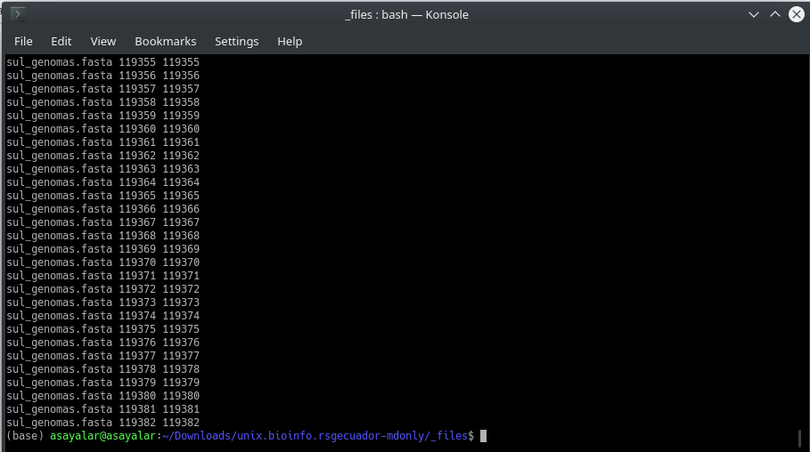

Conceptos generales, instalación y variables internas AWK
Contenido
Conceptos generales, instalación y variables internas AWK¶
En esta parte estudiaremos la parte introductoria del lenguaje de programación AWK, y presentamos algunos ejemplos sencillos con enfoque en Bioinformática.
Advertencia
En este tutorial usaremos la herramienta gawk, que viene instalada por defecto en la mayoría de distribuciones de GNU/Linux. Puede que algunos de los comandos usados con esta herramienta no sean compatibles con otras versiones del programa usadas en MacOS, por lo que les recomendamos instalar gawk usando el gestor de paquetes brew, cuyas indicaciones de instalación se encuentran en el siguiente link.
Archivos para este tutorial¶
En este tutorial usaremos algunos de los archivos que se encuentra en este la carpeta _archivos del repositorio de GitHub de este libro. En todos los ejercicios asumiremos que están trabajando dentro de la carpeta _archivos, por lo que no usamos ningún path relativo para trabajar con los archivos.
¿Qué es AWK?¶
AWK es un lenguaje de programación diseñado para procesamiento de archivos de texto que fue implementado por primera vez en el SO UNIX. Se debe considerar que awk es el programa de UNIX que permite correr scripts escritos en AWK, o en oras palabras AWK es un lenguaje interpretado por el intérprete awk.
Se debe considerar que awk fue implementado en GNU/Linux con el nombre de gawk, del que actualmente hay mucha documentación.
Instalación gawk¶
Para verificar si poseen gawk en su SO deben abrir una terminal y escribir:
$ gawk --version
En caso de que no tengan esta herramienta, deben instalarla usando el gestor de paquetes apt para los usuarios de GNU/Linux, de la siguiente manera:
$ sudo apt install gawk
Los usuarios de MacOS deben usar el gestor brew, como se muestra a continuación:
$ brew install gawk
Elementos y estructura del comando gawk¶
El intérprete gawk necesita dos elementos:
Una o más opciones (no es obligatorio)
Script de AWK o archivo con script de AWK.
Uno o más archivos de entrada.
Las principales opciones de gawk son las siguientes:
Opción |
Descripción |
|---|---|
|
Sirve para especificar un separador de campos. Funciona igual que la variable interna |
|
Se usa para especificar un archivo que contiene un script de AWK |
|
Sirve para declarar una variable |
|
Imprime un mensaje de uso que resume las opciones que acepta gawk |
La estructura del comando sería de la siguiente forma:
$ gawk -[opción] ‘script_AWK’ archivo1 archivo2 …
Para encadenar otro programa de GNU/Linux con awk se emplea lo siguiente sintaxis:
$ programa_GNU/Linux | gawk -[opción] ‘script_AWK’ archivo1 archivo2 …
Variables internas de archivos y registros¶
El nombre del archivo que se procesa por gawk se guarda en la variable interna (vi) FILENAME. Además, este lenguaje procesa los archivos usando elementos llamados registros o filas, que siguen las instrucciones del script de AWK de forma independiente. Para identificar los registros dentro del archivo se usa un separador de registros, que se almacena en la vi RS. Por defecto, los registros se separan por saltos de línea (RS = «\n»), pero esto se puede cambiar. Además, para almacenar el número de registros en procesamiento y procesados se emplean las vi FNR y NR respectivamente.
Tip
En los archivos multi-fasta el separador de registros sería el caracter >, que se encuentra al inicio de los headers de todas las secuencias; mientras que en los archivos PDB se puede usar el string ATOM, que se encuentra al inicio de todas las líneas que tienen información de los átomos de la biomolécula.
Para mostrar el funcionamiento de gawk y algunas de sus vi, realizaremos un ejemplo con el archivo multi-fasta sul_genomas.fasta:
$ gawk '{print FILENAME, FNR, NR}' sul_genomas.fasta
En la siguiente captura se observa la parte final del resultado de este comando:
{kind=link}
Como se observa, en cada línea se imprimió el nombre del archivo, seguido del número de línea dos veces. Esto se debe a que se usó el separador de registros por defecto (salto de línea) y a que las vi FNR y NR fueron iguales en todos los casos.
Ahora, si queremos que los registros sean las secuencias y no todas las líneas del archivo, podemos especificar que el separador de registros sea el caracter > en el script de AWK de la siguiente forma:
$ gawk '{RS= ">"} {print FILENAME, FNR, NR}' sul_genomas.fasta
Ahora, apliquemos el script de AWK anterior a los archivos multifasta sul_genomas.fasta y S_clavuligerus_proteome.fasta:
$ gawk '{RS= ">"} {print FILENAME, FNR, NR}' sul_genomas.fasta S_clavuligerus_proteome.fasta
Pregunta
¿Son iguales los valores FNR y NR en todas las líneas en este caso?. Con este análisis ya podrías deducir de forma adecuada la diferencia entre estas dos vi.
Variables internas de campos¶
Además, cada registro procesado por gawk se divide en campos separados por espacios, tabuladores o saltos de línea. El separador de campo se almacena en la vi FS. Por defecto, el separador de campo es un espacio (FS = » «). Cada campo del registro se guarda en variables internas entre $1 y $n; mientras que el contenido completo del registro se almacena en $0, y el número total de campos en la vi NF.
Con los siguientes ejemplos se explican mejor estos conceptos:
$ echo -e " campo1 campo2\tcampo3,-#%... " | gawk '{print NF, "["$1"]", "["$2"]"}'
$ echo -e " campo1 campo2\tcampo3,-#%... " | gawk '{print NF, "["$3"]", "["$1"]"}'
$ echo -e " campo1 campo2\tcampo3,-#%... " | gawk '{print NF, "["$0"]"}'
$ echo -e " campo1 campo2\tcampo3,-#%... " | gawk '{print NF, $NF}'
Pregunta
¿Porqué al poner $NF se imprime el campo 3?
Algunos puntos importantes que se deben considerar sobre estos ejercicios son los siguientes:
Múltiples espacios en blanco (incluyendo tabuladores) separando campos de texto se ignoran, colapsándose, por lo que NF vale 3.
Por lo explicado en 1, las variables
$1-$nsólo llevan el valor del campo delimitado por los espacios, como muestran las salidas de las líneas 1 a 3.En cambio, la variable
$0, que lleva un registro completo, imprime los separadores de campo del mismo, como muestra la línea 4 de la salida mostrada arriba. 4.Print imprime los argumentos que se le pasan separados por comas, dejando por defecto un espacio sencillo entre ellos (OFS=» «).
Resumen de las variables internas de AWK más comunes¶
Variable interna |
Descripción |
|---|---|
|
Guarda el valor del registro completo actual de un archivo de entrada |
|
Guarda los contenidos de los campos de un registro |
|
Guarda el número total de campos |
|
Guarda el número de argumentos (+1) pasados al comando desde la terminal, después del script |
|
Guarda los argumentos pasados al comando desde la terminal, después del script. ARGV[0] contiene gawk |
|
Nombre del archivo de entrada actualmente en procesamiento |
|
Separador de campos (por defecto SPACE or TAB) |
|
Guarda el número de registros en procesamiento |
|
Guarda el número de registros procesados |
|
Separador de campo de la salida (SPACE por defecto) |
|
Separador de registro de la salida (\n por defecto) |
Material suplementario¶
La mayoría de los contenidos de esta parte se obtuvieron de la documentación oficial de GNU, que pueden acceder eb el siguiente link y del manual del Curso avanzado de programación AWK y Bash para bioinformática y biocómputo en sistemas GNU/Linux del profesor Pablo Vinuesa de la UNAM, que pueden encontrar en este link.